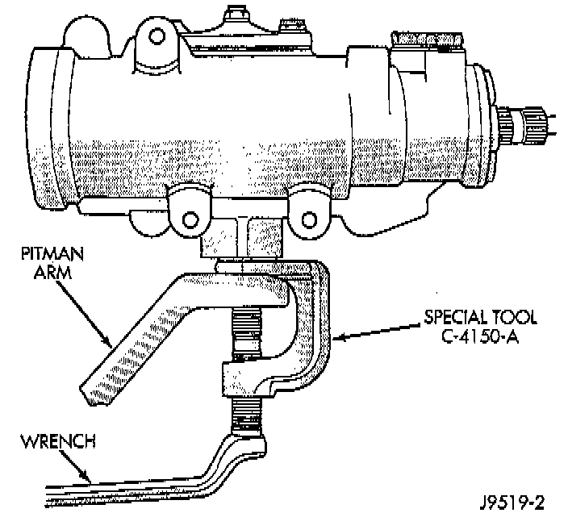

Pitman Arm: Service and Repair

REMOVAL
1. Remove the cotter pin and nut from the drag link at the pitman arm.
2. Remove the drag link ball stud from the pitman arm with a puller.
3. Remove the nut and washer from the steering gear shaft. Mark the pitman shaft and pitman arm for installation reference. Remove the pitman arm from steering gear with Puller C-4150A, or equivalent.
INSTALLATION
1. Align and install the pitman arm on steering gear shaft.
2. Install the washer and nut on the shaft and tighten the nut to 251 Nm (185 ft. lbs.).
3. Install drag link ball stud to pitman arm. Install nut and tighten to 81 Nm (60 ft. lbs.). Install a new cotter pin.